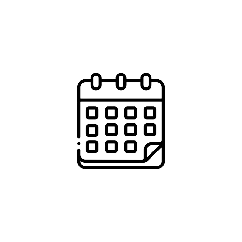

Financeiro
Estratégias de economia
Técnicas eficazes para reduzir gastos desnecessários,
criar um orçamento realista e encontrar maneiras de economizar dinheiro no dia a dia.
Declaração do Imposto de Renda
Instruções sobre como preencher e enviar a declaração de imposto de renda.
Planejamento financeiro para eventos específicos
Orientações sobre como planejar financeiramente eventos importantes da vida,
como casamento, nascimento de um filho, compra de imóvel, viagens ou educação superior.
Estratégias de proteção contra fraudes e golpes financeiros
Orientações sobre como identificar e evitar fraudes financeiras comuns e
dicas práticas para proteger suas informações pessoais,
manter senhas seguras, verificar a autenticidade de instituições financeiras e
agir rapidamente em caso de suspeita de fraude.
Tecnologia
Segurança Online e Privacidade nas Redes Sociais
Dicas sobre como proteger informações pessoais e manter a segurança ao usar redes sociais,
incluindo configurações de privacidade, reconhecimento de scams e práticas recomendadas
para evitar fraudes online.
Desenvolvimento de habilidades digitais
Orientações para ajudar a desenvolver habilidades essenciais no mundo digital, como codificação básica,
habilidades de uso de software de produtividade, navegação na web e
compreensão de conceitos fundamentais de tecnologia.
Inteligência Artificial (IA) e seu impacto na vida cotidiana
Uma visão abrangente sobre o que é Inteligência Artificial e seu impacto na sociedade.
Realidade aumentada (RA) e realidade virtual (RV)
Aplicações e o potencial dessas tecnologias imersivas e informações sobre como funcionam.
Saúde
Saúde e Bem-Estar
Informações sobre saúde física, incluindo artigos, dicas de estilo de vida saudável e exercícios.
Bem-Estar Mental
Estratégias e técnicas para lidar com o estresse,
cultivar resiliência emocional, promover o autocuidado e buscar apoio em momentos de dificuldade.
Primeiros Socorros e Prevenção de Acidentes
Orientações sobre como lidar com situações de emergência comuns, como cortes, queimaduras e engasgos.
Além de dicas de prevenção de acidentes domésticos e no local de trabalho.
Nutrição e dieta saudável
Orientações sobre a importância de uma alimentação equilibrada e
orientações sobre como montar refeições balanceadas, escolher alimentos nutritivos e entender rótulos de alimentos.
Desenvolvimento Pessoal
Desenvolvimento Pessoal
Dicas sobre como definir metas, manter a motivação,
cultivar hábitos positivos, desenvolver a autoconfiança e promover o crescimento pessoal.
Dicas de Estudo e Aprendizagem
Estratégias eficazes para melhorar a memória, aumentar a concentração,
gerenciar o tempo de estudo e enfrentar desafios acadêmicos, como exames e trabalhos escolares.
Comunicação Interpessoal e Habilidades Sociais
Conselhos sobre como melhorar a comunicação verbal e não verbal, resolver conflitos,
construir relacionamentos saudáveis e desenvolver empatia e compreensão.
Resolução de Problemas
Orientações sobre como lidar com conflitos interpessoais, resolver disputas de forma construtiva,
negociar com eficácia e encontrar soluções para problemas pessoais e profissionais.
Dia-a-Dia

Manutenção Básica de Casa e Carro
Dicas de Segurança Doméstica
Organização e Limpeza Doméstica
Cuidados com Animais de Estimação